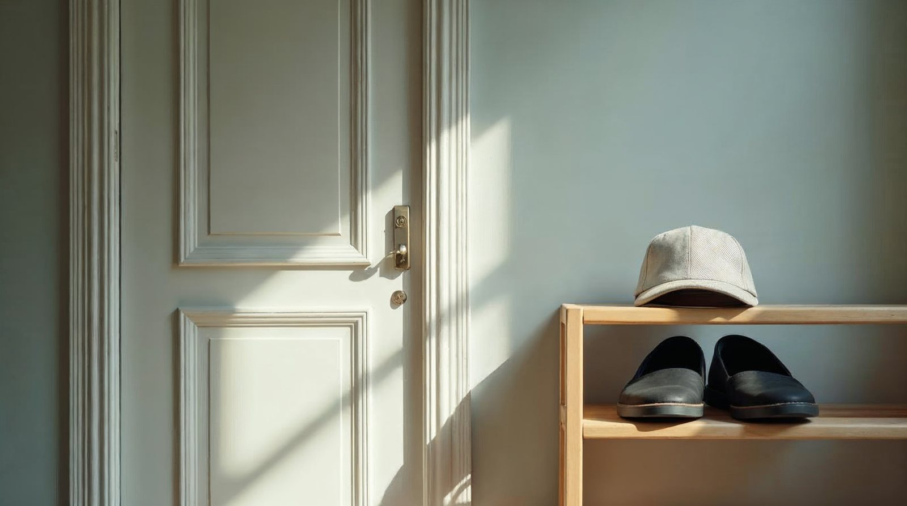
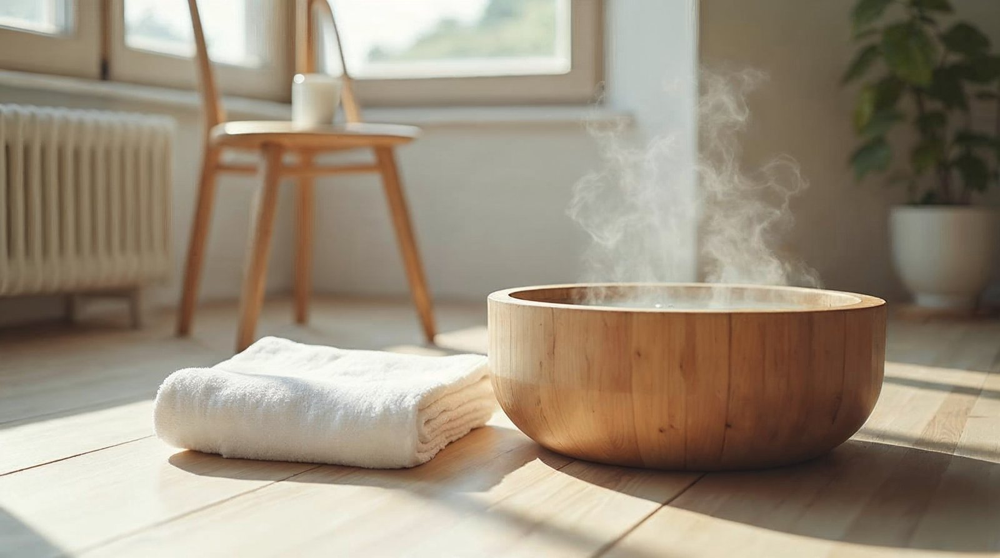
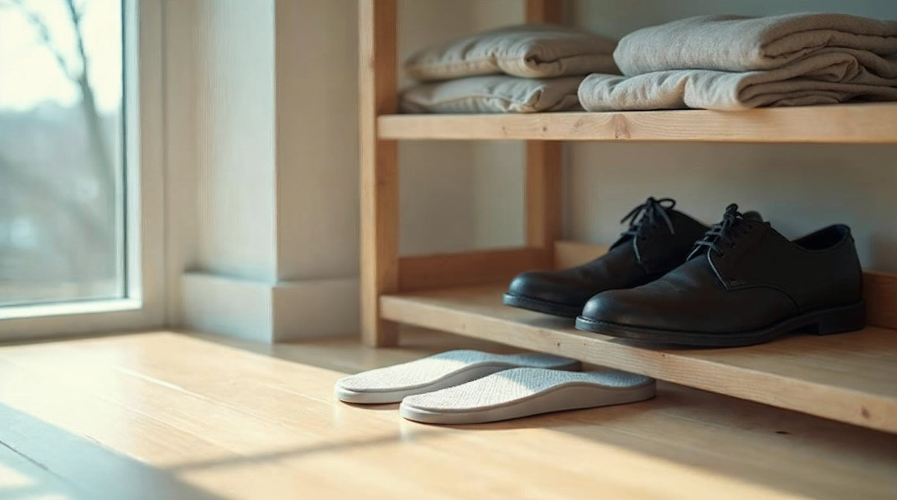
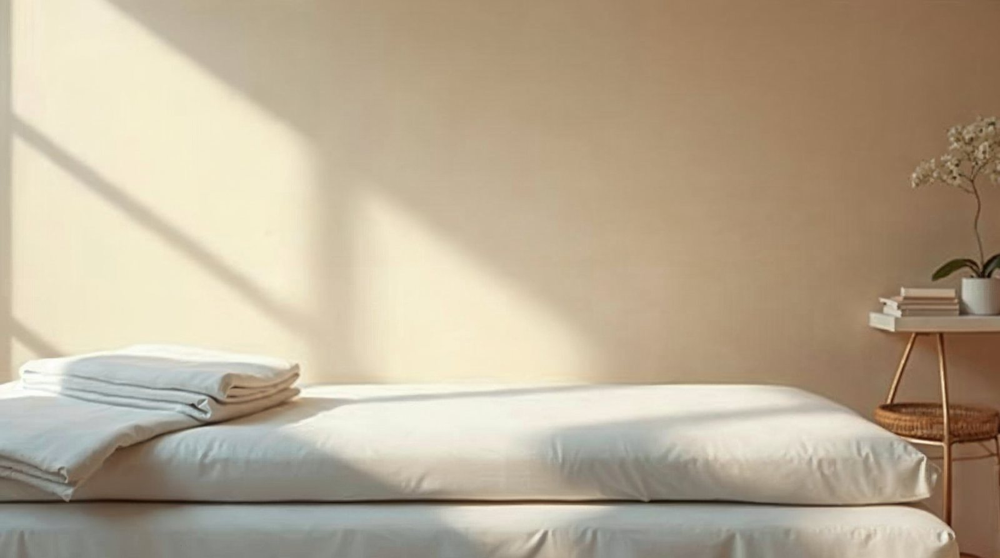
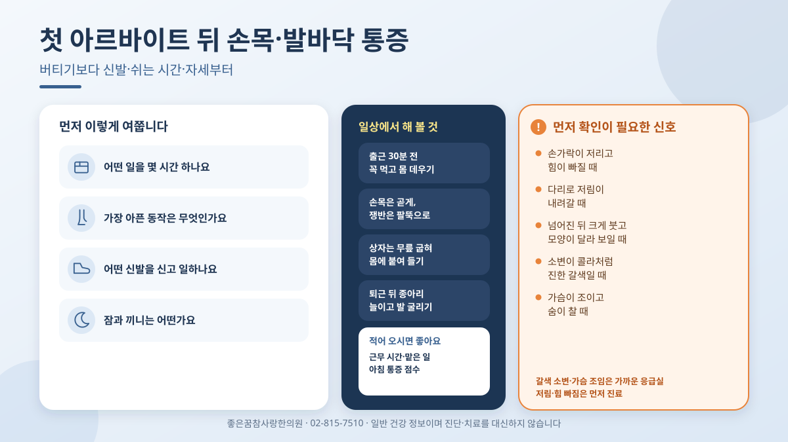

이종호 한의사 감수좋은꿈참사랑한의원 대표원장 (한의사 면허번호 19769)발행 2026-11-27 · 수정 2026-11-27
이 글의 차례
밤 10시, 카페 마감을 마치고 셔터를 내립니다. 버스에서 내려 집으로 가는 언덕 계단을 오르는데 발바닥이 화끈거리고 종아리가 돌처럼 단단합니다. 집에 와 휴대폰을 쥐려니 엄지 쪽 손목이 시큰해서 놓칠 뻔합니다. 다음 날 아침, 침대에서 내려와 첫발을 딛는 순간 뒤꿈치가 찌릿합니다.
수능이 끝나고 처음 해 보는 아르바이트, 처음 내 손으로 돈을 벌어 본다는 설렘이 컸는데 몸은 생각보다 먼저 지쳐 버렸습니다.
진료실에서 이런 말을 자주 듣습니다. "다들 하는 일인데 저만 엄살 부리는 것 같아요." "첫 월급은 받아 보고 싶어서 그만두기 싫어요." 함께 오신 부모님은 그러게 왜 힘든 일을 골랐느냐며 걱정 섞인 핀잔을 하시기도 합니다. 1년 동안 책상 앞에서 버틴 몸이 이제 막 새로운 일을 배우는 중인데, 아프다고 말하는 것조차 눈치가 보였을 겁니다.
그동안 정말 수고 많으셨습니다.
이런 통증은 대개 앉아서 지내던 몸이 서서 들고 나르는 몸으로 바뀌는 적응기에 생깁니다. 처음 1~2주가 가장 힘들고, 몸이 익숙해지면서 차츰 덜해지는 경우가 많습니다. 다만 그냥 버티기보다 신발과 쉬는 시간, 물건을 드는 자세, 손목을 쓰는 법을 먼저 바꿔 보셔야 합니다.
그리고 한 자리가 찌릿하게 아프거나 저리고 힘이 빠지는 느낌이 있다면 근육통과는 다르게 살펴야 합니다.
왜 첫 아르바이트에서 손목과 허리, 발바닥이 한꺼번에 아플까요
고3 한 해 동안 많은 학생이 하루 열 시간 넘게 앉아 지냅니다. 그러는 동안 엉덩이와 허벅지 근육, 발바닥의 아치를 받쳐 주는 작은 근육들은 쓸 일이 별로 없었습니다. 그런 몸으로 갑자기 하루 예닐곱 시간을 서 있으면 발바닥의 단단한 막과 종아리가 몸무게를 쉼 없이 받아 내야 합니다.
카페나 식당 바닥은 대개 딱딱한 타일이고, 미끄러지지 않으려고 새로 산 신발은 아직 발에 길들지 않아 딱딱합니다. 저녁이면 종아리가 붓고 다음 날 아침 첫발에 뒤꿈치가 찌릿한 것은 그 부담이 쌓였다는 신호입니다.
손목은 일의 종류에 따라 아픈 자리가 달라집니다. 카페에서는 커피 머신에 손잡이를 끼워 돌리고, 원두를 꾹꾹 눌러 다지고, 무거운 우유 통을 들고 따르는 동작이 수백 번 되풀이됩니다. 식당에서는 그릇을 여러 개 올린 쟁반을 한 손으로 받치고, 행주를 비틀어 짜고, 설거지를 합니다.
편의점에서는 음료 상자를 들어 냉장고를 채우고, 물류센터에서는 상자를 들어 올려 몸을 비틀며 옮깁니다. 엄지를 벌린 채 손목을 꺾어 힘을 주는 동작이 많으면 손목 엄지 쪽 힘줄이 붓고 시큰해지기 쉽고, 무언가를 꽉 쥐고 비트는 동작이 많으면 팔꿈치 바깥쪽이 아파 오기도 합니다.
허리는 드는 자세에서 부담을 받습니다. 바닥의 상자를 허리만 숙여 들어 올리거나, 무거운 것을 든 채 발은 그대로 두고 허리만 돌리면 허리 근육과 관절에 무리가 갑니다. 겨울에는 문이 열릴 때마다 찬바람이 들어오고 냉장 창고를 오가니, 몸이 덜 풀린 채로 힘을 쓰는 일도 잦습니다.
여기에 처음이라 실수하지 않으려는 긴장이 더해집니다. 어깨와 목이 늘 올라가 있고, 쉬는 시간에도 휴대폰을 들여다보느라 몸을 제대로 쉬게 하지 못합니다. 마감 근무를 마치고 늦게 잠들고 출근 전 끼니를 거르면, 근육이 회복할 재료와 시간이 모두 모자랍니다.
그렇다면 내 통증은 어느 쪽일까요? 넓게 뻐근하고 양쪽이 비슷하며 이틀 사흘에 걸쳐 줄어든다면 안 쓰던 근육을 쓴 뒤의 근육통에 가깝습니다. 손가락 하나로 짚을 수 있는 한 자리가 아프고 특정 동작마다 찌릿하다면 힘줄이나 인대에 부담이 쌓였을 수 있습니다. 저리고 힘이 빠지는 느낌은 신경이 눌린 신호일 수 있어 따로 살핍니다.

이런 학생들을 자주 뵙습니다
이런 학생들이 많습니다. 카페에서 일을 시작하고 2주쯤 지나 엄지 쪽 손목이 시큰하다며 오는 학생입니다. 병뚜껑을 열거나 휴대폰을 쥘 때 찌릿하고, 엄지를 굽힌 채 손목을 새끼손가락 쪽으로 꺾으면 아프다고 합니다. 이런 경우에는 손목 엄지 쪽 힘줄에 부담이 쌓인 것은 아닌지 살펴보고, 일하는 동작을 하나씩 같이 바꿔 봅니다.
식당에서 서빙을 하며 계단을 오르내리는 학생은 저녁마다 종아리가 붓고 발바닥이 화끈거린다고 합니다. 쟁반을 늘 같은 손으로만 들어 한쪽 손목과 팔꿈치까지 아프기도 합니다. 물류센터나 택배 상하차처럼 짧게 몰아서 하는 일을 다녀온 학생은 다음 날 허리가 뻣뻣해 세수할 때 허리를 숙이기 어렵다고 합니다.
상자를 들다 한쪽 허리가 뚝 하며 찌릿했다면 근육통과 다르게 살펴야 합니다.
편의점 야간 근무를 하는 학생은 잠이 낮과 밤으로 뒤섞이면서 몸 전체가 무겁다고 합니다. 이런 학생에게는 아픈 자리와 함께 잠자는 시간을 어떻게 고정할지부터 같이 고민합니다.
부모님께서 먼저 알아채고 데려오시는 경우도 있습니다. 아이가 아프다는 말 대신 짜증이 늘고 말수가 줄었다고 하십니다. 그럴 때 저는 아이 이야기를 먼저 듣고, 부모님께는 일을 계속할지 말지보다 어떻게 하면 덜 아프게 일할 수 있을지를 함께 고민해 주십사 부탁드립니다.

일하는 날, 순서대로 바꿔 볼 것
아직 일을 고르는 중이라면 처음부터 하루 여덟 시간, 주 닷새를 채우기보다 하루 네다섯 시간, 주 사흘 정도로 시작해 보시길 권합니다. 몸이 서서 일하는 데 익숙해지는 데에도 시간이 걸리기 때문입니다. 전단 배포나 행사 안내처럼 바깥에 오래 서 있는 일이라면 얇은 옷을 여러 겹 입고, 쉬는 시간마다 실내에서 몸을 녹이며 따뜻한 물을 마십니다.
찬 데 오래 서 있다 보면 몸이 굳은 줄도 모르고 힘을 쓰게 되니까요.
출근 30분 전에는 꼭 무언가를 먹습니다. 빈속으로 서서 일하면 쉽게 지치고 어지럽습니다. 집을 나서기 전 5분 동안 발목을 돌리고, 벽을 짚고 종아리를 늘이고, 손목을 천천히 돌려 몸을 데웁니다. 신발은 바닥이 미끄럽지 않으면서 쿠션이 있는 것으로 고르고, 새 신발은 출근 전에 며칠 신어 길들입니다. 양말은 조금 도톰한 것이 발바닥에 편합니다.
일하는 동안에는 한쪽 다리에만 체중을 싣고 서 있지 않도록 신경 씁니다. 발 받침대나 낮은 상자가 있다면 두 발을 번갈아 올려 두세요. 짬이 날 때 까치발을 열 번쯤 들었다 내리고, 신발 안에서 발가락을 쥐었다 펴면 종아리와 발바닥의 피가 한결 잘 돕니다.
손목은 꺾은 채로 힘을 주지 않는 것이 핵심입니다. 손목을 곧게 펴고 팔 전체로 힘을 쓰세요. 쟁반은 손가락 끝이 아니라 손바닥 전체와 팔뚝으로 받치고 몸 가까이 붙여 듭니다. 같은 동작을 한 손으로만 하지 말고 할 수 있는 일은 양손을 번갈아 쓰고, 무거운 우유 통이나 음료 상자는 두 손으로 몸에 붙여 옮깁니다.
행주는 비틀어 짜기보다 손바닥으로 눌러 물기를 빼 보세요.
바닥의 상자를 들 때는 무릎을 굽혀 엉덩이를 뒤로 빼고, 상자를 몸에 바짝 붙인 채 다리 힘으로 일어납니다. 방향을 바꿀 때는 허리만 돌리지 말고 발을 함께 옮겨 몸 전체가 돌게 하세요. 머리 위 선반에 물건을 올릴 때는 받침대를 쓰고, 혼자 들기 버거운 무게는 동료와 같이 듭니다.
처음이라 부탁하기 어렵겠지만, 다치지 않는 것이 함께 일하는 사람들에게도 도움이 됩니다.
쉬는 시간에는 앉아서 다리를 조금 높게 올리고, 물을 마시고, 손목을 가볍게 털어 줍니다. 근무 시간과 쉬는 시간은 일을 시작할 때 근로계약서로 확인해 두면 몸을 쉬게 할 틈을 계획하기도 쉽습니다. 출입문 가까이에서 일하거나 냉장 창고를 자주 오간다면 얇은 옷을 겹쳐 입어 몸이 식지 않게 합니다.
퇴근하면 미지근한 물로 10~15분 샤워해 몸을 데우고, 벽을 짚고 종아리를 늘입니다. 의자에 앉아 발바닥 아래에 작은 공이나 물병을 놓고 앞뒤로 천천히 굴리면 발바닥이 풀립니다. 누워서 다리를 베개 위에 올려 15분쯤 쉬면 저녁 붓기가 덜합니다.
손목이 한 자리만 붓고 화끈거린다면 처음 하루 이틀은 수건으로 싼 얼음주머니를 10분쯤 대고, 넓게 뻐근하다면 따뜻하게 찜질합니다.
잠은 마감 근무를 한 날에도 정해 둔 시각에 눕도록 해 보세요. 누워서 휴대폰을 손목을 꺾은 채 오래 쥐고 있으면, 쉬어야 할 손목이 밤에도 일하게 됩니다. 처음 2주 동안은 근무를 몰아서 잡지 말고 사이사이 쉬는 날을 끼워, 몸이 따라올 시간을 주세요.
부모님께 드리고 싶은 이야기
처음 번 돈으로 무언가를 해 보려는 마음은 아이에게 꽤 큰 의미입니다. 아프다는 말에 바로 그만두라고 하시기보다, 어디가 언제 아픈지 먼저 물어봐 주세요. 신발이나 깔창을 함께 고르러 가 주시고, 출근 전 끼니와 퇴근 뒤 잠을 챙겨 주시는 것만으로도 큰 힘이 됩니다. 다만 아래와 같은 신호가 보이면 아이가 괜찮다고 해도 진료를 먼저 받게 해 주세요.

얼마나 지켜보고, 언제 진료를 받을까요
넓게 뻐근한 근육통은 대개 처음 1~2주가 가장 힘들고, 몸이 익숙해지면서 차츰 덜해지는 경우가 많습니다. 매일 아침 아픈 정도를 0부터 10까지 점수로 적어 보면 줄어드는 흐름이 보입니다. 한 자리가 아프고 특정 동작마다 찌릿한 통증이 1~2주 넘게 이어지거나, 아침 첫발의 뒤꿈치 통증이 2주 넘게 그대로라면 상담을 받아 보시길 권합니다.
다음과 같은 경우에는 기다리지 말고 먼저 해당 진료를 받으세요.
- 손가락이 저리고 힘이 빠져 컵이나 쟁반을 자꾸 떨어뜨리는 경우
- 엉덩이에서 다리로 저림이 내려가거나, 발목이나 발가락에 힘이 빠지는 경우
- 넘어지거나 부딪힌 뒤 손목이나 발목이 크게 붓고 모양이 달라 보이는 경우
- 근육이 단단하게 붓고 손대기 힘들 만큼 아프며, 소변이 콜라처럼 진한 갈색으로 나오는 경우
- 관절이 붉게 붓고 뜨거우며 열이 나는 경우
- 일하다 가슴이 조이고 숨이 차거나, 어지러워 쓰러질 것 같은 경우
소변 색이 진한 갈색으로 변하고 근육이 심하게 아프거나, 가슴이 조이고 숨이 차면 지체하지 말고 가까운 응급실로 가세요. 진통제로 아픔을 덮은 채 같은 일을 계속하는 것은 피합니다.

좋은꿈참사랑한의원에 처음 오시면
처음 오시면 저는 어떤 일을 하는지, 근무 시간표와 하루에 서 있는 시간, 가장 많이 되풀이하는 동작이 무엇인지부터 여쭙습니다. 아픈 자리와 아프기 시작한 때, 가장 불편한 동작, 신고 일하는 신발, 요즘 잠드는 시각과 끼니도 차례로 여쭙습니다. 수능 전후로 생활이 어떻게 달라졌는지도 함께 듣습니다.
그다음 양손을 올려 봐 달라고 말씀드리고 맥을 짚습니다. 맥을 짚는 동안 몸이 찬 편인지, 소화와 대변은 편한지 여쭙고, 필요하면 혀를 봅니다. 이어서 손목을 꺾고 엄지를 움직일 때 어디가 아픈지, 허리를 앞뒤 옆으로 굽히고 돌릴 때 어떤지, 발바닥과 종아리 어디를 누르면 아픈지를 확인하고, 다리와 손의 감각과 힘도 살핍니다.
손목 힘줄이나 발바닥 막의 상태를 더 보아야 할 때는 초음파로 아픈 쪽과 반대쪽을 비교해 보기도 합니다.
그 결과에 따라 침과 뜸 같은 치료를 상의하고, 몇 주 넘게 이어지는 힘줄이나 발바닥 통증이라면 체외충격파를 고려할지 함께 이야기합니다. 장비마다 맞는 부위와 주의할 점이 달라 미리 설명드립니다. 비용과 건강보험 적용, 미성년이라면 보호자가 함께 와야 하는지는 방문 전 전화로 확인해 주세요.
토·일·공휴일에도 오전 9시 30분부터 오후 3시까지 진료하니 근무가 없는 날에 오셔도 됩니다. 다시 오시면 지난번에 바꾸기로 한 동작과 신발이 어땠는지, 그사이 근무 중 가장 아팠던 순간이 언제였는지부터 이어서 여쭙습니다.
오실 때 근무한 날짜와 시간, 맡은 일, 아픈 자리를 표시한 그림, 날마다 아침의 0~10 점수, 일할 때 신는 신발을 가져오시면 이야기가 훨씬 빨라집니다.
마치며
처음 번 돈에는 그만큼의 땀이 묻어 있습니다. 그 땀이 몸에 오래 남는 아픔이 되지 않도록, 지금은 몸이 새 일을 배우는 시간이라고 생각하고 조금 천천히 가셨으면 합니다. 아프다고 말하는 것은 엄살이 아니라 오래 일하기 위한 준비입니다.
다음에 저를 만나시면, 이번 주 근무표와 가장 아팠던 동작 하나부터 여쭙겠습니다.
함께 읽으면 좋은 글
- 오래 서서 일하면 발바닥과 발 아치가 피곤한 것은 어떻게 하나요?
- 아침에 첫발을 디딜 때 발바닥이 아프면 어떤 점을 살펴보나요?
- 손목과 손가락 힘줄이 아플 때 초음파로 무엇을 확인하나요?
- 수능이 끝난 뒤 밤낮이 바뀌었을 때 잠 리듬은 어떻게 되돌리나요?

왜 첫 아르바이트에서 손목과 허리, 발바닥이 한꺼번에 아플까요
- 고3 한 해 동안 많은 학생이 하루 열 시간 넘게 앉아 지냅니다.
- 그러는 동안 엉덩이와 허벅지 근육, 발바닥의 아치를 받쳐 주는 작은 근육들은 쓸 일…
이런 학생들을 자주 뵙습니다
- 이런 학생들이 많습니다.
- 카페에서 일을 시작하고 2주쯤 지나 엄지 쪽 손목이 시큰하다며 오는 학생입니다.
일하는 날, 순서대로 바꿔 볼 것
- 아직 일을 고르는 중이라면 처음부터 하루 여덟 시간, 주 닷새를 채우기보다 하루 네…
- 몸이 서서 일하는 데 익숙해지는 데에도 시간이 걸리기 때문입니다.
부모님께 드리고 싶은 이야기
- 처음 번 돈으로 무언가를 해 보려는 마음은 아이에게 꽤 큰 의미입니다.
- 아프다는 말에 바로 그만두라고 하시기보다, 어디가 언제 아픈지 먼저 물어봐 주세요.
자주 묻는 질문
아프면 아르바이트를 그만둬야 할까요?
넓게 뻐근한 근육통이라면 신발과 쉬는 시간, 드는 자세를 바꾸며 1~2주 지켜보는 경우가 많습니다. 한 자리가 찌릿하게 계속 아프거나 저리고 힘이 빠진다면 일을 줄이고 먼저 진료를 받으세요.
진통제를 먹고 일해도 되나요?
진통제로 아픔이 덜 느껴져도 부담은 그대로 쌓일 수 있습니다. 위장이 약하거나 다른 약을 먹고 있다면 약사나 의사와 먼저 상의하고, 진통제 없이는 일하기 어려운 상태라면 진료를 받아 보세요.
손목 보호대를 차고 일해도 되나요?
같은 동작을 오래 할 때 잠깐 차는 것은 도움이 될 수 있습니다. 너무 조이면 손이 저릴 수 있으니 손가락 색과 감각을 확인하고, 쉬는 시간과 잘 때는 풀어 두세요.
깔창을 따로 사야 할까요?
신발에 쿠션이 부족하거나 발바닥이 화끈거린다면 발 모양에 맞는 깔창이 편할 수 있습니다. 새 깔창도 며칠에 걸쳐 길들이고, 아침 첫발 통증이 2주 넘게 이어지면 상담을 받아 보세요.
근육통이 있는 날에도 운동을 해도 되나요?
근육통이 심한 날에는 가볍게 걷거나 늘이는 정도로 하고, 힘든 운동은 뻐근함이 가라앉은 뒤로 미루세요. 수능 뒤 운동을 새로 시작한다면 일과 운동이 겹쳐 무리가 가지 않도록 양을 천천히 늘립니다.
좋은꿈참사랑한의원은 재진 때 지난번 이야기부터 이어서 여쭙니다. 진료시간과 예약은 오시는 길에서 확인하세요.
어디서 상담받을 수 있나요?
좋은꿈참사랑한의원은 서울 동작구 만양로2길 2 신성빌딩 3층·5층(서울 동작구 상도동, 7호선 상도역 3번 출구 근처)에 있습니다. 한의사 3명(이종호 대표원장, 조영기 수석진료원장, 정원영 진료원장)이 진료합니다. 진료시간은 평일 09:30~20:00(점심 13:00~14:00), 토·일·공휴일 09:30~15:00이며, 방문 전 전화로 확인을 권합니다. 예약은 네이버 예약, 카카오톡 상담, 전화 02-815-7510로 받습니다.
이 글은 일반적인 건강 정보이며 개인의 진단이나 치료를 대신하지 않습니다. 증상이 있거나 복용 중인 약이 있다면 진료를 통해 확인하세요. 치료 효과는 개인마다 다를 수 있습니다.
작성 기준: 일반적으로 알려져 있는 건강 정보를 참고해 정리했습니다(대표원장 감수). 증상 기록은 1~2주 동안 하루 1회, 비슷한 시간에 적어 오시면 지난 상태와 비교하기 쉽습니다.